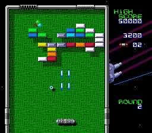
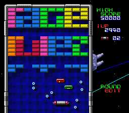

|


Review
Game Type: Ball and Paddle
This is a revamp of the classic Arkanoid, which is a revamp of the
classic Breakout. Basically you maneuver a paddle to knock a ball into
bricks at the top of the screen, destroying them one by one. Certain
bricks contain powerup capsules which you can catch as they fall. Enemies
float around the screen that must be avoided or destroyed. DIA adds a
couple new powerup types like a field to catch the ball once if you miss
and a ball powerup that lets it crush everything in its path. Old powerups
have also been enhanced; Extend can now be caught twice and Disrupt now splits
the ball into a whopping eight fragments.
Gameplay: 80/100
Purists who were looking for an exact translation of the arcade will
be disappointed, as there have been many changes. Of course some of these
are improvements. Old enemies will perform new feats - when you hit the
cluster of balls it now shatters into three rebounding pieces that can
destroy bricks, and the morphing cubes can leave extra bricks behind. The new
powerups like the crusher ball and the enhanced Disrupt are very cool.
And there are now a magnificent 99 stages to blast though.
But not all the changes are for the best. There are minor problems
like not having enough time to line up a shot at the start of a round. But
far more seriously, someone screwed around with the way the ball rebounds
off bricks. If it hits a brick corner (as happens quite often) it may go
off at some crazy angle, or it may just keep right on traveling. This
will undo all your old strategies that rely on the ball travelling at a
certain angle, because you just can't predict its behavior anymore.

DIA has mouse support, thankfully, but the dash button should let even
those with digital control pads play reasonably well. There are three modes
for two players - the traditional alternating play, two players
simultaneously in the main game, or a fun split-screen game where players
race to complete one of several special stages. It also has a stage
editor, which might be cool if you could save your creations. As it is, your
hard work is gone as soon as you want to create a new stage or hit the
system power.
The NES version was horrendously difficult, but Taito may have
overcompensated here. The ball never reaches the nailbitingly fast speeds it did
in the arcade, and the powerups let you clear any stage with almost no
effort. The bosses, however, are a different story. They force you to dodge
lasers, etc. while keeping the ball in play, but all too often a bullet will
block you from rescuing the ball and all you can do is watch it as it flies
by. It can get quite frustrating, especially since you encounter the same
three cheesy bosses repeatedly. I have cleared a dozen stages on one life
only to have my game ended by a boss.
Overall, though, I can't say the game plays bad. My most serious gripe
is the low ball speed; there's almost no way you can miss it and hence there's
not much tension. It's fun to play through but I beat it on the highest
difficulty in one sitting.
Graphics: 80/100
Graphically DIA may actually beat the arcade version. It's more colorful
and yet it retains the solid, blocky look. Cool background scenes have been added,
but sadly there are only 4 among the 100 stages. Repetition aside, though, the
game looks excellent.
Sound: 40/100
The music for the bosses is simply awful, looping endlessly and blaring
tunelessly. Good thing they saw fit not to add music during the main stages;
the notes from the ball rebounding are music enough. All the sound effects
lack oomph and a couple are downright annoying. The bothersome ones aren't used
too often though. Overall the audio is tolerable but far from enjoyable.
Overall: 80/100
It pains me to have to give an Arkanoid game any rating lower than 90, but
sadly I must. DIA isn't a bad game but it could have been so much more. It lacks
the polish of the arcade, not in spite of but because of the "improvements" that
have been added. And of course the most glaring fault is the insanely low
difficulty. There isn't even a way to make it tougher that I can find (aside
from using a control pad instead of a mouse).
Die hard Arkanerds should give it a rental. At $35 new, it could be
you'll want it just for the semi-cool two player versus mode. At that price you
can probably get the NES version with a working paddle, though, and that's a
far safer bet for your entertainment dollar.
|